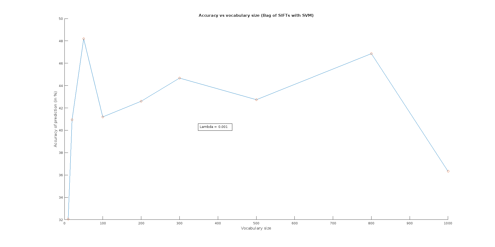
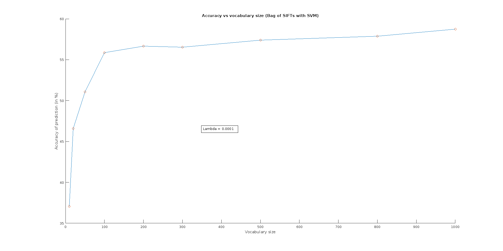
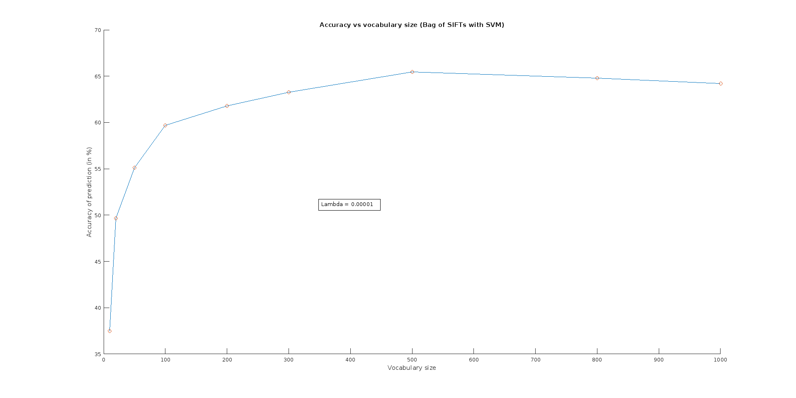
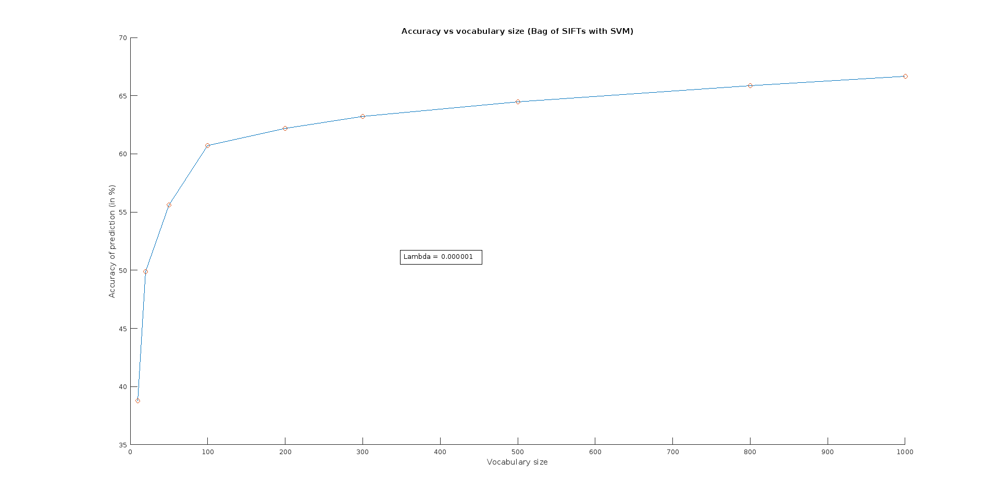

Here are the prediction accuracies for different combinations:
| Representation | Classifier | Accuracy | Results |
|---|---|---|---|
| Tiny images(naive) | 1-nearest-neighbor | 19.4 % | Results webpage |
| Tiny images(naive) | 5-nearest-neighbor | 20.6% | Results webpage |
| Tiny images(centered and normalized) | 1-nearest-neighbor | 22.4 % | Results webpage |
| Tiny images(centered and normalized) | 13-nearest-neighbor | 23.5 % | Results webpage |
For the base system, I implemented a basic bag of SIFT model coupled with the already existing k-nearest-neighbor classifier which searches for the nearest neighbor in the bag of SIFT feature space using L2 distance metric.
Here are the prediction accuracies for different combinations:
| Representation | Classifier | Accuracy | Results |
|---|---|---|---|
| Bag of SIFT | 1-nearest-neighbor | 51.0 % | Results webpage |
| Bag of SIFT | 7-nearest-neighbor | 54.1% | Results webpage |
I implemented the set of 15 1-vs-all linear SVM classifiers on top of the vl_svmtrain() routine. Initially, I kept the vocabulary and bag of SIFT parameters unchanged. With a lambda of 0.000005, I obtained an accuracy rate of 59.4%.
I then meddled around the step size parameter for bag of SIFTs, the SVM lamdba parameter and the size of vocabulary which resulted in a new accuracy rate of 67.5%.
Here are the prediction accuracies for different combinations:
| Representation | Classifier | Accuracy | Results | Additional Comments |
|---|---|---|---|---|
| Bag of SIFT | SVM (lambda = 0.00005) | 59.5 % | Results webpage | |
| Bag of SIFT (step size = 5) | SVM (lambda = 0.0000025) | 67.5% | Results webpage | Vocabular size: 500; Built with step size 5 SIFT feature extraction - sampling 400 features from each training image |
| Bag of SIFT (step size = 4) | SVM (lambda = 0.0000008) | 68.3% | Results webpage | Vocabular size: 200; Built with step size 10 SIFT feature extraction - sampling 400 features from each training image |
I replaced the SVM method of vl_feat with a modified version of Olivier Chapelle's code. Running the SVM classifier with a lambda of 0.001 and using cojugate gradients instead of the Newton method increased the accuracy rate to 69.3% - which is a very small improvement from the previous best we got (68.3%).
Next, I modified the SVM classifier to use chi-squared kernel rather than using RBF since CSF lets you handle discrete features and should work better in our bag of features model. Upon running the modified implementation, I get an accuracy rate of 73%.
Here are the prediction accuracies for different combinations:
| Representation | Classifier | Accuracy | Results | Additional Comments |
|---|---|---|---|---|
| Bag of SIFT | Modified SVM (lambda = 0.001) | 69.3 % | Results webpage | Vocabular size: 200; Built with step size 10 SIFT feature extraction - sampling 400 features from each training image |
| Bag of SIFT | Modified SVM (lambda = 0.0001) | 73.0 % | Results webpage | Vocabular size: 200; Built with step size 10 SIFT feature extraction - sampling 400 features from each training image; Chi-squared kernel of order = 4; |
In addition, I also generated vocabularies of multiple sizes and different sampling rates. Each of the vocabularies were generated by sampling 400 128-dimensional SIFT featuresfrom 1500 training images with a step size of 10 and applying k-means clustering on them. The k (vocabulary size) is varied from 10 through 1000 in increasing steps. The bag of SIFTs representations for both the training and test image were generated for each vocabulary using a step size of 10 for the vl_dsift() routine. Here is a comparison of the prediction accuracy against the vocabulary size when the SVM classifier parameters are fixed.  As you can see, the lambda parameter here is quite bad. Even with bag of SIFTs and SVM and a large vocabulary size the maximum accuracy is really bad. So, I decided to tune the lambda parameter further and see the effect on this graph.  Fine tuning improves the overall accuracy and also the makes the dependence relation between vocabulary size and accuracy rate much simpler.  
I implemented slightly LLC encoded vector representation in get_bags_of_sifts2.m [apologies, the .m file name is not reflective of the code purpose here!]. With a lambda of 0.000002 and vocabulary of 500 visual words (stored in vocab_500.mat), I was able to get an accuracy rate of 65.3% which was slightly better than the bag of SIFTS result. The results are available here
NOTE: The modification was to compute alpha vector (defined in the paper) using Moore-Penrose pseudoinverse instead of the constrained optimization problem which speeded up the computation time. For verifying my code, I downloaded the code from original authors available here and compared the encoding and performance. The performance for similar values of lambda was lower (58.5% compared against 65% with my implementation) for the author's version although it was slightly faster to compute. So, I decided to stick to my implementation of LLC.
I augmented the 500-dimensional bag of SIFTs representation with a 512-dimensional GIST vector representation and ran the SVM classifier on it. With a lambda of 0.00001 and vocabulary of 500 visual words (stored in vocab_500.mat), I was able to get an accuracy rate of 68.7% which was better than the bag of SIFTS result. The results are available here
With slight change to the lambda parameter, the accuracy maxes out at 69.2%. Here's the result.
Since my previous best result was with bag of SIFTs and chi-squared kernel SVM classifier, I ran the same pipeline albeit with the augmented bag of SIFTS. The new accuracy rate I got was 77.2%.
Note that I used lambda = 0.0001 and kernel of size 4. I believe the accuracy rate can be further improved if the parameters for the visual vocabulary and patch size are properly fine-tuned for this pipeline. However, due to time constraints I'm unable to do so currently.
Parameters for best result
| Representation | Classifier | Accuracy | Parameters |
|---|---|---|---|
| Bag of SIFTs with GIST (get_bags_of_sifts_gist.m) | Support vector machine with chi-squared kernel (svm_classify.m) | 77.2 % |
Vocabular size: 500, built with step size 10 SIFT feature extraction - sampling 400 features from each training image; Bags of SIFT: step size = 10; GIST parameters: param.orientationsPerScale = [8 8 8 8]; param.numberBlocks = 4; param.fc_prefilt = 4; SVM classifer: type_of_training = 3, lambda = 0.0001; hom.order = 4;(kernel size) |
| Representation | Classifier | Accuracy | Running time | Parameters |
|---|---|---|---|---|
| Tiny images | K - nearest neighbor | 22.4 % | ~20 seconds |
Tiny images: make_zero_mean = 1, square_width = 16; K - nearest neighbor: K =1; |
| Bag of SIFTs | K - nearest neighbor | 48.1 % | ~3 minutes |
Vocabular size: 100, built with step size 10 SIFT feature extraction - sampling 400 features from each training image; Bags of SIFT: step size = 10; K - nearest neighbor: K=1; |
| Bag of SIFTs | Support vector machine | 57.5 % | ~3.5 minutes |
Vocabular size: 100, built with step size 10 SIFT feature extraction - sampling 400 features from each training image; Bags of SIFT: step size = 10; SVM classifer: type_of_training = 1, lambda = 0.0001; |